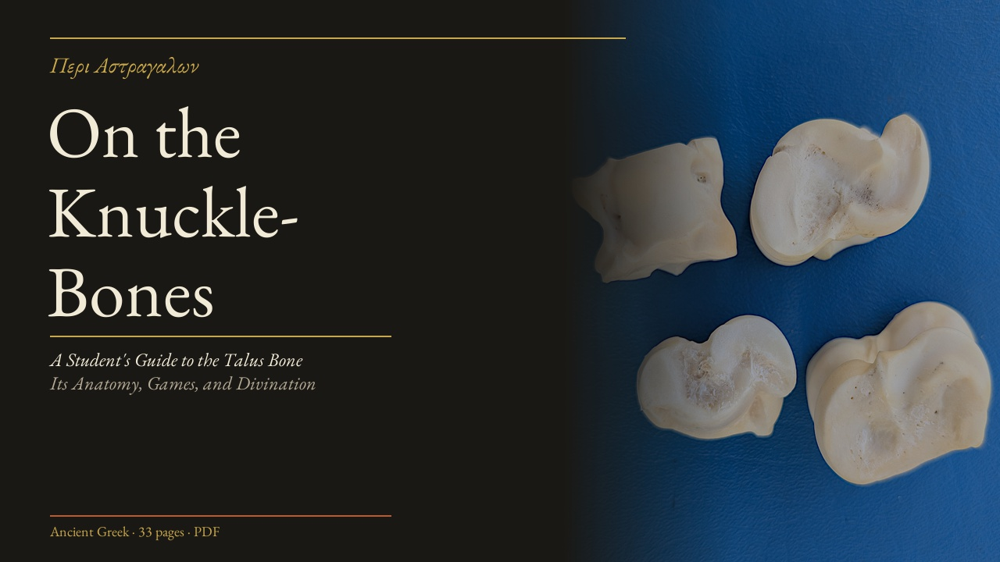

The sacred bones have spoken for three thousand years.
χῖος · πρανής · ὑπτία · κῷοςAstragaloi — knucklebones of sheep or goats — were among the most sacred objects in ancient Greece. Before there were dice, before there were coins, there were bones. They were cast at shrines, in homes, at the threshold of decisions that could not be made by reason alone.
Each bone has four distinct faces, each with a traditional name and numerical value attested by Julius Pollux and confirmed by Eustathius of Thessalonica: the narrow flat side (χῖος, 1), the broad concave belly (πρανής, 3), the broad convex back (ὑπτία, 4), and the narrow indented groove — the highest face (κῷος, 6). The worst throw — all four showing χῖος — was called the Dog (κύων). The supreme throw — one of each face — was the Aphrodite (Ἀφροδίτη). Four bones thrown together produce 35 unique combinations, each mapped in ancient inscriptions to a divine response.
Astragalomancy inscriptions — stone tablets listing every combination and its oracle — survive from sanctuaries across Asia Minor and Greece. This practice was not superstition. It was a structured method of consulting the divine: a technology for thinking through what could not be thought through alone.
"We set aside the bones for the gods — they speak back through the way they fall." — paraphrase of Plato, Phaedrus 244b–c, on divination and divine gift
Hold your question in mind. When you are ready, cast. Four astragaloi fall — their combination reveals the will of the gods.

This 33-page guide covers the full tradition of astragalomancy — from archaeological context and ancient sources, through the complete oracle table drawn from surviving inscriptions, to practical instruction for casting and reading the bones.